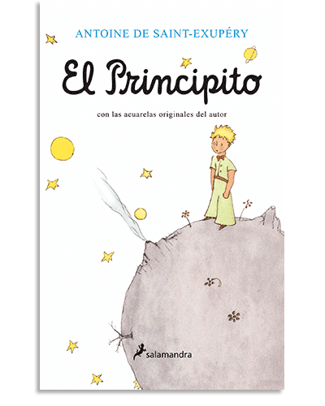
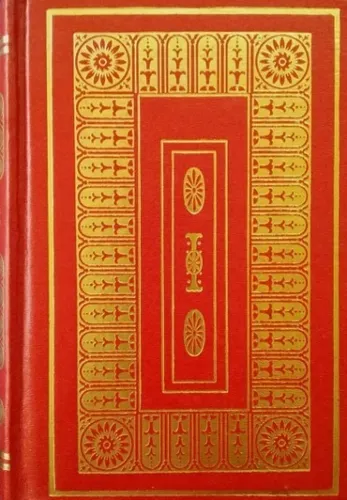

Sobre mí
Mi nombre es Steven de Jesus Ampie Corea, tengo 21 años y estoy actualmente cursando la carrera de ingeniería de software en la universidad tecnológica de Panamá(UTP).
Soy una persona tranquila que le gusta mucho aprender cosas nuevas y superarse como persona.
Mis cualidades
- Reservado: Persona cautelosa para compartir sus pensamientos y sentimientos.
- Lógico: Basa sus decisiones en hechos y razonamientos objetivos.
- Pacífico: Busca la armonía y evitar conflictos.
- Estratégico: Planifica con anticipación para alcanzar sus metas.
- Tranquilo: Mantiene la calma y serenidad en diferentes situaciones.
Mis pasatiempos
- Ver series o películas
- Escuchar música
- Resolver puzzles
Mis libros favoritos
El principito
Autor: Antoine de Saint-Exupéry
Resumen: Un relato filosófico sobre la vida y la inocencia contada a través de los ojos de un niño.

El viejo y el mar
Autor: Ernest Hemingway
Resumen: La lucha de un viejo pescador contra un enorme pez mar adentro.

Azul
Autor: Rubén Darío
Resumen: Una colección de poemas modernistas que revolucionó la literatura hispana.

La metamorfosis
Autor: Franz Kafka
Resumen: Historia de un hombre que despierta transformado en insecto y la reacción de su familia.
La isla del tesoro
Autor: Robert Louis Stevenson
Resumen: Una aventura clásica de piratas y búsqueda de tesoros.

Mis películas favoritas
Interstellar
Director: Christopher Nolan
Protagonistas: Matthew McConaughey, Anne Hathaway, Jessica Chastain
El efecto mariposa
Director: Eric Bress, J. Mackye Gruber
Protagonistas: Ashton Kutcher, Amy Smart, Melora Walters
Mi canción favorita: Moth to a Flame
Canciones favoritas en general
| Canción | Género | Cantante/Grupo | Álbum | Año |
|---|---|---|---|---|
| Moth to a Flame | Pop | Swedish House Mafia & The Weeknd | Dawn FM | 2022 |
| Why'd You Only Call Me When You're High | Indie Rock | Arctic Monkeys | AM | 2013 |
| 305 | Pop | Shawn Mendes | Wonder | 2020 |
| Cry Baby | Indie Pop | The Neighbourhood | Wiped Out! | 2015 |
| Avalanche | Metalcore | Bring Me The Horizon | That's the spirit | 2015 |